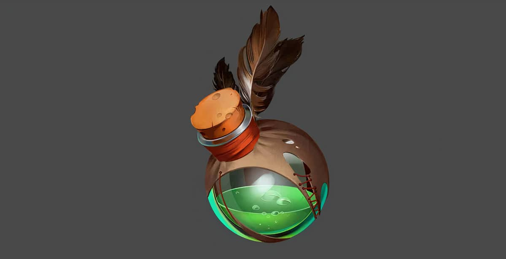

Công Thức Pha Chế Thuốc Trong Minecraft
Thay vì mỗi tối cứ phải ru rủ trong nhà vì sợ hãi bọn quái vật ngoài kia, thì bạn nên học cách pha chế thuốc để có thể cân và xử lý hết bọn chúng. Vì sao nó lại đặc biệt đến như vậy? Lọ thuốc trong Minecraft có rất nhiều loại, và mỗi loại lại có một cái hay riêng một hiệu ứng riêng.
Ở đây hiệu ứng mà mình muốn nói là những hiệu ứng đặc biệt giống như có siêu năng lực vậy, chẳng hạn như là tăng sức mạnh bản thân, tăng khả năng hồi phục máu, tàng hình, … vv
Trong bài viết này mình sẽ chỉ cho bạn cách pha chế để làm ra lọ thuốc cũng như từng công dụng của từng loại thuốc, một cách chi tiết nhất có thể.
Nào chúng ta cùng nhau bắt đầu tìm hiểu thôi!
Nguyên liệu pha chế thuốc trong Minecraft

Cách chế tạo thuốc, điều chế thuốc trong Minecraft
Bạn đã biết hết nguyên liệu rồi phải không nào
Bây giờ chúng ta đến phần hấp dẫn nhất, đó là cách pha chế thuốc, điều chế thuốc trong Minecraft, nhưng trước tiên bước vào pha chế thuốc thì hãy chuẩn bị một số thứ đã nào!

Chuẩn bị
Chai nước và giàn pha thuốc là 2 thứ không thể thiếu trong quá trình pha chế thuốc trong Minecraft.
Và cần một ít bột quỷ lửa để làm nguyên liệu đốt, sau khi đã có 3 thứ trên thì đặt như hình để giàn pha thuốc hoạt động.